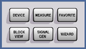

Setup Keys
The upper keys to the right of the display provide access to dialogs for basic instrument setup. Additional dialogs can be accessed via the utility keys to the left of the display.

- DEVICE – selects the device type (one or several subinstruments) or changes the active subinstrument
See also "Instrument Setup Dialog". - MEASURE – loads measurement firmware applications
See also "Measurement Controller Dialog". - FAVORITE – for future extensions
- BLOCK VIEW – provides an overview of the signal routing settings
See also "Block View Dialog". - SIGNAL GEN – loads generator and signaling firmware applications
See also "Generator/Signaling Controller Dialog". - WIZARD – opens the wizard provided by the active firmware application (only supported by selected applications)